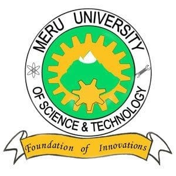
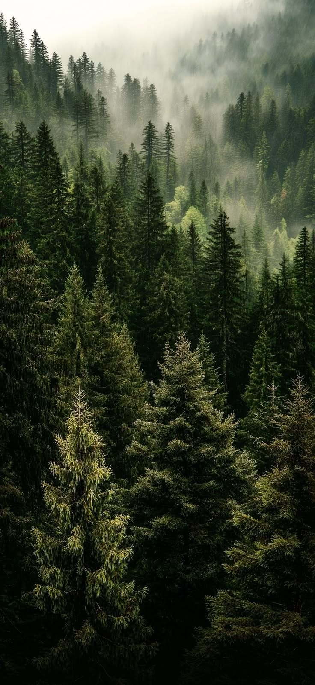
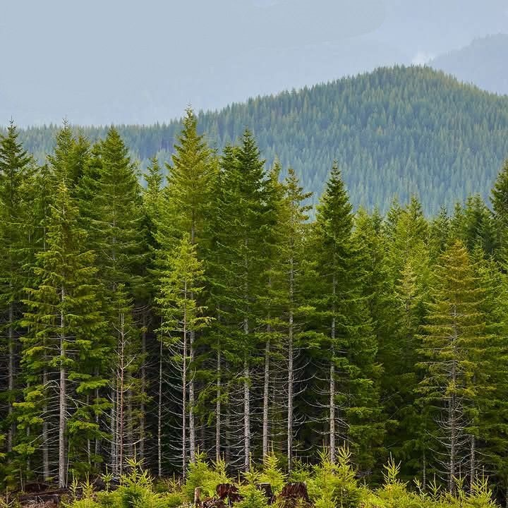
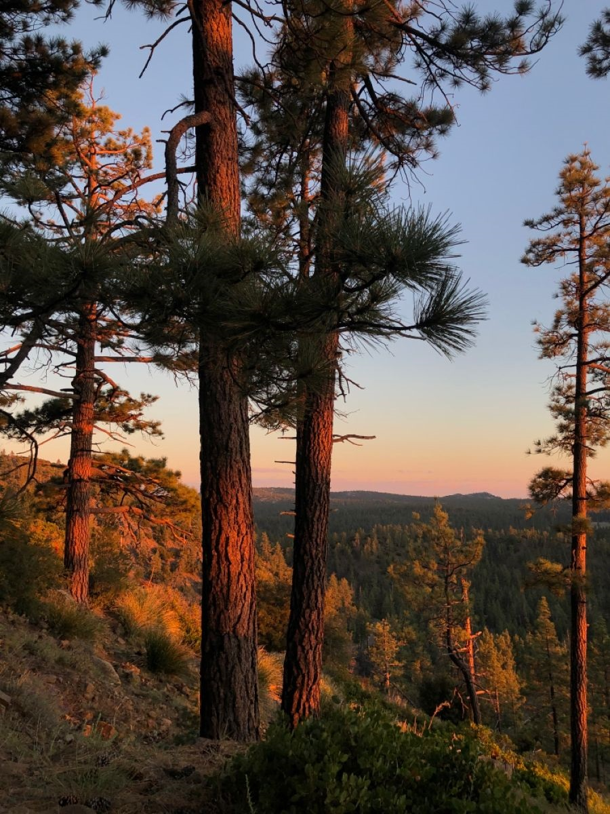

Welcome to MUST Green
MUST Green is an environmental sustainability initiative focused on promoting tree planting, environmental conservation, and a cleaner campus at Meru University of Science and Technology.


Promoting Environmental Sustainability at Meru University of Science and Technology
Watch our video and learn how you can take part in the MUST Green tree planting campaign.
MUST Green is an environmental sustainability initiative focused on promoting tree planting, environmental conservation, and a cleaner campus at Meru University of Science and Technology.
Our purpose is to encourage students, staff, and the surrounding community to participate in environmental conservation activities.
The MUST Tree Campaign encourages members of the university community to plant and care for trees. Every tree planted contributes to a healthier environment and a greener future.
Students and staff can participate by planting trees, taking care of existing trees, and educating others about environmental conservation.
MUST Green brings together students and members of the university community who are passionate about protecting the environment.
Together, we work to promote environmental awareness, tree planting, conservation, and sustainable practices.
We promote the planting and conservation of different tree species. Some of the trees featured in our campaign include:

Mahogany is a valuable tree species known for its strong timber and importance in environmental conservation.

Cedar trees are important for biodiversity and contribute to a healthy natural environment.

Pine trees are widely planted for environmental conservation and can help improve the natural landscape.
Environmental sustainability means using natural resources responsibly so that future generations can also benefit from them.
At MUST Green, we believe that everyone has a role to play in protecting the environment.
Would you like to become part of the MUST Green environmental initiative?
Students and members of the university community are encouraged to participate in environmental activities.